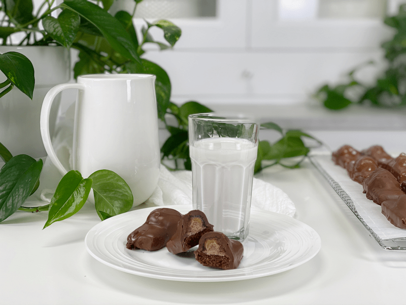
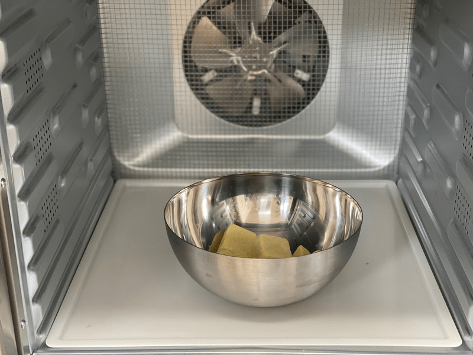
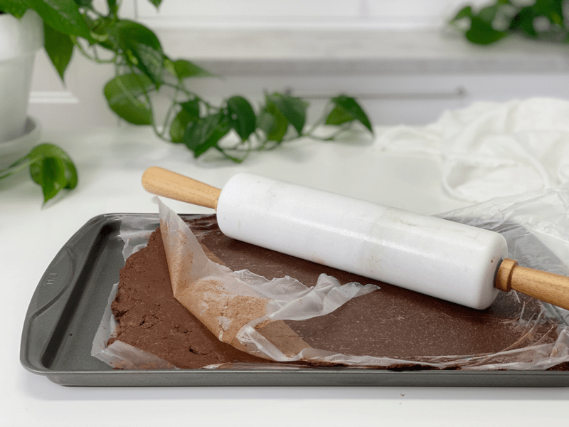
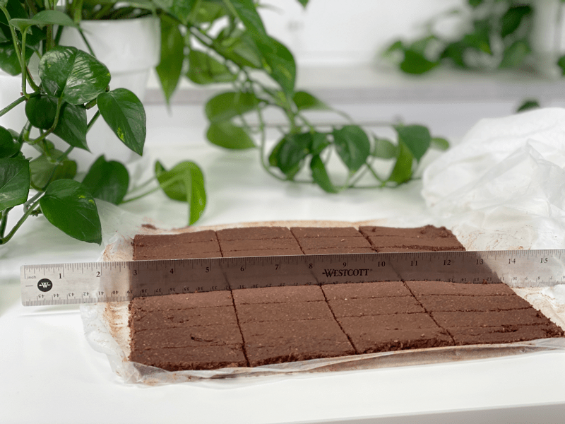
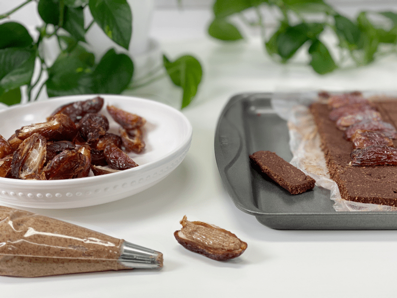
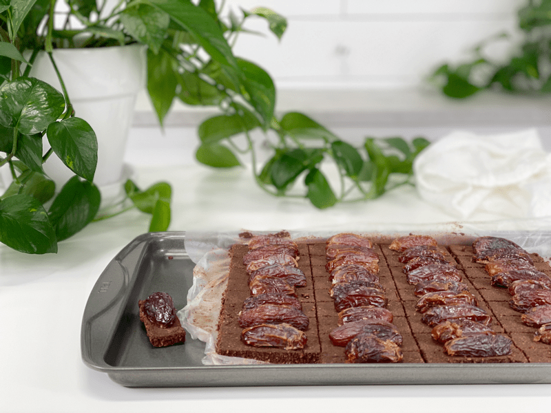
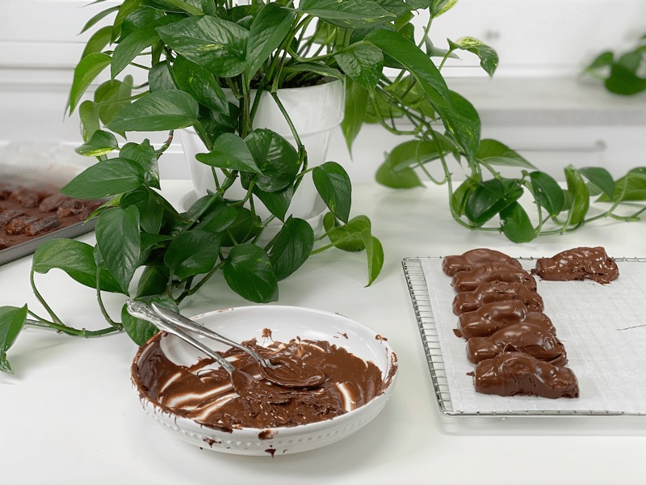
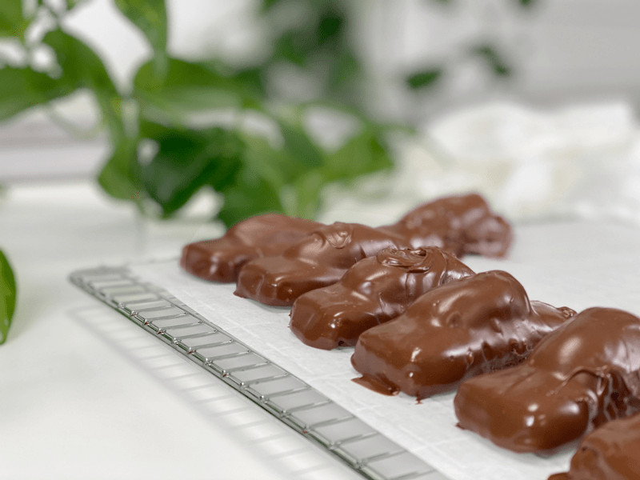

Caramel Chocolate Candy Bars
Bob loves to share his raw treats with others, well except for these, which I found him hoarding. He even stashed a few in the freezer, thinking they were for safekeeping… from others. Haha For about two weeks, he kept walking by with one in hand, and he would say, “You can make these again. Seriously.” I got the hint. Little does he know that I, too, have a stash in the back of the freezer for when he runs out. Shhhh! Please don’t tell on me. :)

Although it looks complicated, I promise you; this is such an easy treat to throw together. I made up a bunch and froze them without the chocolate coating. I like to do my chocolate fresh, so I figured that with the bulk of the recipe all put together, it would make for a quick treat when the cravings hit.
There are four layers to this candy bar. The bottom layer is made from coconut, cacao, and to add a little spice. I threw in a few dashes of cayenne powder, which is entirely optional, but I love hidden layers of flavor. There is just enough there to be an element of surprise, but not “hot” enough to make you run for the water hose. I also added in cacao butter. This is not required, but it made for a nice “snap” to the candy bar base. Cacao butter adds firmness to a recipe as well as a deep rich chocolate flavor.
Working from the bottom up, we hit the almond butter layer; this can be substituted with peanut butter, cashew butter, walnut butter, pecan butter, sunflower seed butter, tahini, or raw coconut butter. Shew! The sky is the limit on this one.
Next, we have the date layer. I used Medjool dates, and I highly recommend that you stick to that variety. They are large and very moist, which is a perfect combination for this treat. Lastly, we have a chocolate layer. You can use either raw hardening chocolate or melted chocolate chips. These days you can find fair trade, organic, vegan, gluten-free, soy-free chocolate chips on the market…. which is an excellent option if you don’t have the ingredients to make the raw version just yet. I hope you, too, enjoy this recipe. Have a blessed day, amie sue
 Ingredients:
Ingredients:
Yields 48 candy bars (size depending)
Chocolate Crisp:
- 1/3 cup melted raw cacao butter
- 2/3 cup maple syrup
- 3 cups shredded dried coconut
- 2 cups raw cacao powder
- 1/2 tsp cayenne powder
- 1/2 tsp Himalayan pink salt
- 1/4 cup water
Caramel Dates:
- 3/4 cup nut butter
- 24 Medjool dates, cut in half, seed removed
Chocolate Coating:
Preparation:
Chocolate bar base:
- In a small bowl, whisk together the melted cacao butter and maple syrup. Set aside.
- An excellent way to melt the cacao butter is to place it in a glass or stainless steel bowl and slip it into the dehydrator, just long enough until it melts.
- In a large bowl, combine the dried coconut, cacao powder, cayenne, and salt. Mix together.
- Pour the combined cacao butter and maple syrup into the dry ingredients and with your hands mix everything together.
- Add the water and mix well with your hands.
- The batter will appear to be very dry and crumbly, which is to be expected. It should, however, stick together when pinched. If not, add a bit more water.
- Press the batter firmly onto a cookie sheet that has a lip.
- I lined the tray with Press n’ Seal (a type of plastic wrap), pressed the batter evenly with my hands, topped with another sheet of Press n’ Seal, and used a rolling pin to make it more compacts.
- Lift the top layer of plastic off and cut it into small rectangles. They can be any size, just make sure that they will accommodate the size of the dates you are using. These are very rich, so don’t go too big.
Caramel dates:
- Place the nut butter into a piping bag fitted with a small tip.
- Alternatively, you can use a zip-lock bag and just snip the bottom corner piece off for the almond butter to flow through.
- After the almond butter is in the bag, twist shut, making sure that you don’t have large air bubbles. Set aside.
- Cut each date in half, evenly. Remove and discard the pit.
- Place the piping tip in the corner of the date where the pit used to be and pipe a strip of almond butter on the date half. Do this till all the dates are used.
Assembly:
- Place one date, upside down on top of the chocolate bar base.
- Place in the freezer for 30+ minutes.
- Remove from the freezer and dip each bar into the melted chocolate.
- I placed the bar on a fork and lowered it into the chocolate, making sure to cover the whole bar. Tap the handle of the fork on the edge of the bowl to knock off any excess chocolate.
- Place on a sheet of parchment paper and let the chocolate harden. For added decoration, you can drizzle extra chocolate over the top.
- Store in an airtight container for a week or keep in the freezer for up to 3 months. Enjoy!
-

-
A good way to melt cacao butter is to place it into a bowl and pop it into the dehydrator until melted.
-

-
Press the chocolate base between 2 sheets of plastic wrap.
-

-
Cut the bars into the size you desire.
-

-
Pipe the almond butter into each half of the Medjool date.
-

-
Ready for a dip in thee ol’e chocolate bowl.
-

-
Yea, not sure what happened, but they look a little sloppy. Happy to say that it didn’t affect the taste.
-

-
I think they look like matchbox cars dipped in chocolate.
© AmieSue.com